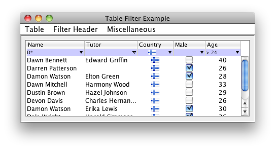

TableFilter
TableFilter is a set of Swing components to support user-driven filtering on tables: it is, currently, the more comprehensive table filter for Java (Swing), offering a filtering of the type found in Microsoft Excel. It is freely available, under MIT license, working under Java 6 or later. You can try it with this example application as Jar file. There is a separate Java 5 version, but it is, since November 2012 (version 4.5.0), not longer maintained.
A single line of code is sufficient to associate a filter to a table:
TableFilterHeader filterHeader = new TableFilterHeader(table, AutoChoices.ENABLED);

Since version 3.0 the Gui ensures full consistency among platforms, simplifying the development and usage of the library.
Generic project info:
- The source code, is hosted on a git repository at Github (project name: tablefilter-swing)
- The binaries are directly available on the central maven repository
- Issues or bugs can be reported at the Github's coderazzi issues site.
- There is a forum to discuss any related topics
Additional library documentation:
- Tutorial describing the filter header interfaces.
- Download page, including changelog and history.
- Performance of the library on different scenarios.
- Javadoc generated documentation.
- Short howto list.
- Specific java 5 related information.
The TableFilter library is now featured on the book 'Undocumented Secrets of MATLAB-Java Programming', by Yair M. Altman; he has kindly allowed me to publish this extract.